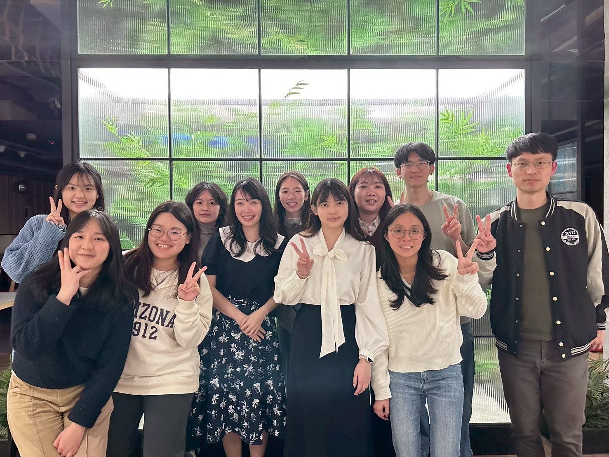
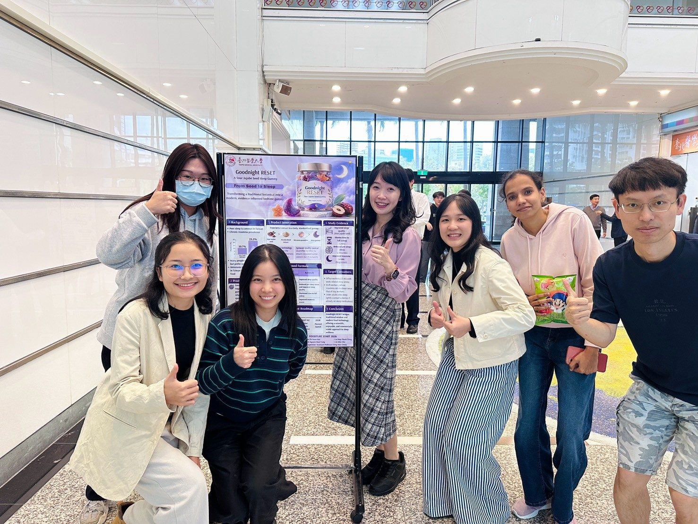
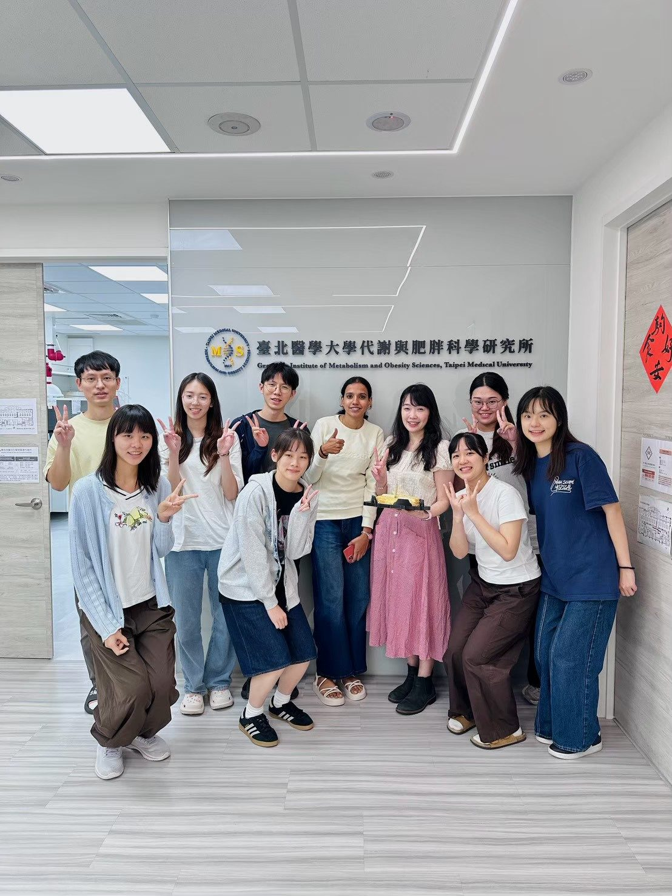
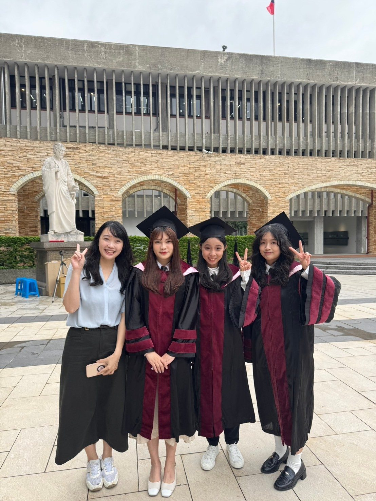
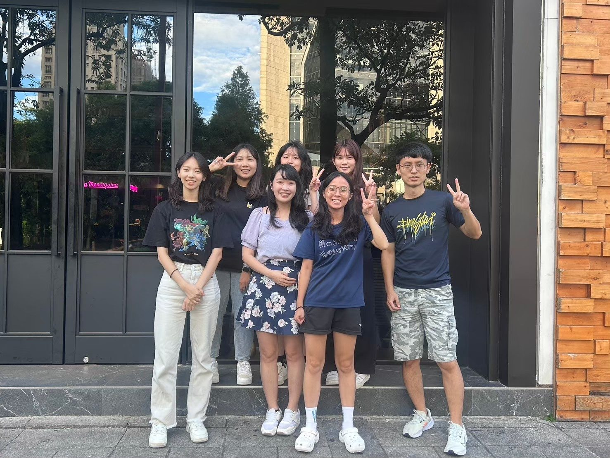
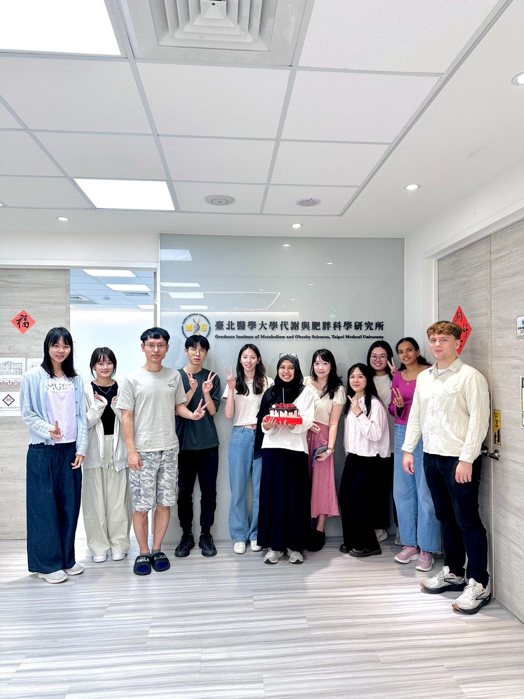

Decoding fatty liver disease from tissue to genome從組織到基因體，解析脂肪肝疾病
CWC Lab focuses on metabolic dysfunction-associated steatotic liver disease (MASLD) and steatohepatitis (MASH). We combine AI pathology, genetics, transcriptomics, multi-omics, 3D genome and epigenetics, built on high-quality human histological data and organism models of MASH.CWC 實驗室專注於代謝功能障礙相關脂肪性肝病（MASLD）與脂肪性肝炎（MASH）。我們結合 AI 病理、遺傳學、轉錄體學、多體學、3D 基因體與表觀遺傳學，並以高品質的人體組織病理資料及 MASH 動物模式為基礎進行研究。
- Graduate Institute of Metabolism and Obesity Sciences代謝與肥胖科學研究所
- College of Nutrition, Taipei Medical University臺北醫學大學 營養學院
- TMU Research Center for Digestive Medicine北醫消化醫學研究中心
Research研究方向
AI pathology for MASLD and MASHMASLD 與 MASH 的 AI 病理
Scoring liver biopsies by eye is slow and varies between pathologists. We develop AI tools for whole-slide images that assess the key histological features of MASH objectively and reproducibly.以肉眼判讀肝臟切片耗時，且不同病理醫師之間存在差異。我們開發應用於全玻片影像的 AI 工具，客觀且可重複地評估 MASH 的主要組織病理特徵。
Principal Investigator計畫主持人

Ching-Wen Chang, PhD 張瀞文
Assistant Professor, Graduate Institute of Metabolism and Obesity Sciences, Taipei Medical University臺北醫學大學 代謝與肥胖科學研究所 助理教授
Dr. Chang trained at National Yang-Ming University and, with a Dragon Gate fellowship, at Dr. Xin Wei Wang's laboratory in the Center for Cancer Research, U.S. National Cancer Institute (NIH), building expertise in liver cancer genetics, computational biology and oncology data science.張老師於國立陽明大學完成研究訓練，並獲科技部龍門計畫支持，赴美國國家癌症研究所（NIH）Xin Wei Wang 博士實驗室進修，專長為肝癌遺傳學、計算生物學與腫瘤資料科學。
- Best Poster Award, APASL Annual Meeting 20232023 APASL 年會 最佳海報獎
- NIH Women Scientist Advisors (WSA) Scholar Award, 20222022 美國 NIH Women Scientist Advisors 學者獎
- NIH FARE travel awards, 2018 and 2021美國 NIH FARE 旅行獎（2018、2021）
changc11@tmu.edu.tw · ORCID 0000-0002-1777-6441
Team實驗室成員

Lab life實驗室生活





News最新消息
Join us加入我們
We welcome master's and PhD students, research assistants and international interns with a background in medicine, molecular biology, biochemistry, biotechnology, bioinformatics or computer science. Research experience helps but is not required.歡迎具醫學、分子生物、生化、生物技術、生物資訊或資訊工程背景的碩博士生、研究助理及國際實習生加入。具研究經驗者佳，但非必要。
For international students, we host interns through these programs:國際學生可透過以下計畫申請至本實驗室實習：
To apply, email your CV, a short cover letter and transcripts to申請請寄履歷、簡短自我介紹及成績單至 changc11@tmu.edu.tw.
- Address地址
- Taipei Medical University, 250 Wuxing St., Xinyi District, Taipei 110, Taiwan110 臺北市信義區吳興街 250 號 臺北醫學大學
- changc11@tmu.edu.tw